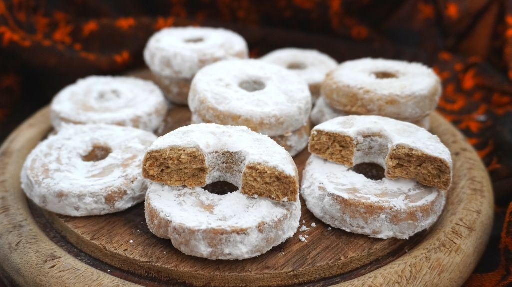
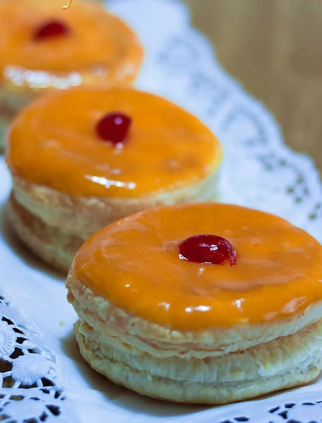

Postres típicos de Málaga
Aunque siempre haya cosas de las que no podamos disfrutar como nos gustaría, está claro que nadie podrá
quitarnos la opción de saborear un buen dulce artesanal.
Si te estás aficionando a la repostería y quieres probar algunos postres nuevos típicos de nuestra provincia
durante la Navidad o en cualquier otra fecha especial, a continuación te dejamos algunos postres malagueños
para endulzarte estas fiestas.
Los postres malagueños tradicionales incluyen los pestiños y borrachuelos (típicos de Semana Santa y
Navidad), la torta loca (una torta aromatizada con anís), el bizcocho de naranja y los roscos de vino. Otros
postres destacados son el Bienmesabe y la tortas de aceite, además de elaboraciones con castañas y frutas.
Roscos de vino
Los roscos de vino son unos dulces típicos de Navidad en forma de rosquilla. Se denominan así por llevar en
la masa una cierta cantidad de vino. Se trata de una rosquilla muy típica en la cocina española,
especialmente en La Mancha, y en la Provincia de Málaga.

Ingredientes
- 300 g. de harina de trigo normal de todo uso
- 40 g. de sésamo tostado
- 70 g. de azúcar molido o azúcar glass
- 100 g. de manteca de cerdo
- 1 cdita. de granitos de anís
- 120 g. de vino dulce, tipo moscatel o Pedro Ximenez
- La ralladura de 1 naranja
- 70 g. de azúcar glass o molido para decorar
Paso a paso
- Comenzamos tostado la harina. Ponemos la harina en una sartén ancha al fuego. Con una cuchara de
madera iremos removiendo a medida que la harina se va tostando. Tenemos que regular la
temperatura y removerla constantemente para evitar que se queme. Este paso nos llevará unos
10-15 minutos. Retiramos la sartén del fuego y la dejamos que se enfríe antes de utilizarla.
- Podemos comprar el sésamos ya tostado o tostarlo en casa en una sartén durante unos minutos.
- Cuando la harina esté fría la ponemos en un bol tamizándola. Es imprescindible el tamizado ya
que si no le quedarán unos grumos duros producto del tostado. Añadimos el azúcar, el anís y la
ralladura de naranja. Mezclamos para integrar los ingredientes.
- Añadimos la manteca de cerdo que ha de estar a temperatura ambiente, blandita para poder
trabajarla y el vino. Con un tenedor vamos incorporando los ingredientes hasta que nos queden
unas migas mojaditas. Con la mano compactamos la masa y formamos una bola.
- Colocamos la masa sobre un papel de horno sobre la superficie de trabajo y la achatamos. Tapamos
con un nuevo papel de horno y, con un rodillo, estiramos hasta que tenga un espesor de 1 a 1,5
cm. Es una masa de textura bastante arenosa, por eso es necesario que compactemos la masa por
los bordes para apretarla, a medida que la vamos estirando.
- Con un cortapastas grande y uno pequeño, formamos los roscos de vino. Los vamos colocando sobre
la fuente de horno directamente, sin necesidad de engrasarla.
Pestiños
El pestiño, llamado en algunos países de Hispanoamérica prestiño o incluso pristiño, es un tipo de dulce
frito en sartén que se suele servir como dulce navideño o de Semana Santa, típico de varias regiones de
España.

Ingredientes
- 1 kg. harina
- 25 grs. levadura de panadero
- 250 ml. aceite de oliva suave
- 250 ml. vino blanco o manzanilla
- 50 grs. matalaúva
- 1 peladura naranja agria
- 1 pizca de sal
- 150 ml. agua templada
- Para el almíbar
- 1 kg. azúcar
- 1 y 1/2 litros de agua
- 1 rama de canela
- 1 peladura de limón
Paso a paso
- En primer lugar haremos el preparado con el aceite. Vertemos en una sartén el aceite y cuando
comience a calentarse le agregamos la matalaúva y la cáscara de la naranja agria para que se
impregne de los aromas. Cuando se dore todo, colamos el aceite, retiramos y dejamos enfriar.
- Mientras reposa el aceite, hacemos un volcán con el kilo de harina en un bol grande y le
agregamos en primer lugar la levadura de panadero disuelta en 150 ml de agua templada. Luego
incorporamos poco a poco el vaso de vino, la pizca de sal y por último le vamos añadiendo el
aceite ya templado.
Si os gusta algún licor en especial podéis añadirle un poco, aunque con el vino que lleva la
masa es suficiente. En nuestro caso, le añadimos un chorrito de anís.
- Amasamos bien, hacemos una bola, tapamos con un paño de cocina y dejamos levar una hora, hasta
que doble el tamaño.
Aprovechamos este tiempo para elaborar el almíbar. En una olla o cacerola grande, añadimos el
kilo de azúcar al litro y medio de agua, la cáscara de limón y la rama de canera. Podéis agregar
media rama más si os gusta el aroma a canela, como es mi caso ;p Lo ponemos a fuego lento y lo
dejamos hervir hasta que tome una consistencia acaramelada. Para comprobarlo cogemos una cuchara
y vertemos a modo de hilo en un plato para ver el espesor que tiene.
- Una vez transcurrido el tiempo de levado, volvemos a amasar para expulsar el aire y dividimos la
masa en varias porciones que iremos estirando y dándole la forma que deseemos (Canutillos,
rombos...)
- Freímos en aceite abundante de girasol y ponemos papel secante para que eliminar el exceso de
grasa. Cuando el almíbar esté frio, lo vertemos en una fuente o un tupperware y le vamos
añadiendo los pestiños que se hayan enfriado. Dejamos reposar antes de consumir.
Tortas locas
Las Locas de Málaga son un dulce tradicional compuesto por dos capas de hojaldre rellenas de crema pastelera,
cubiertas con un glaseado de yema de huevo de color naranja.

Ingredientes
- 2 láminas de hojaldre.
- Medio litro de leche.
- 3 yemas para la crema.
- Maicena.
- Cáscara de limón.
- Canela en rama.
- Esencia de vainilla.
- Agua.
- Azúcar.
- 4 yemas para el glaseado
- Guindas rojas confitadas.
Paso a paso
- Extender el hojaldre en una bandeja de horno sobre papel vegetal y, con un vaso o recipiente
circular, cortarlo para tener esta forma. Cubrir con otro trozo de papel vegetal y prensar con otra
bandeja para que no suba en exceso.
- Introducir la bandeja en el horno precalentado a 200 ºC y dejarla unos 15 minutos.
- Para la crema pastelera, calentar la leche con cáscara de limón y canela hasta que hierva y,
después, dejar que se enfríe. Poner las 3 yemas y el azúcar en un recipiente y mezclarlo todo bien.
Echar la maicena en la leche y verter esa mezcla con las yemas y el azúcar. Añadir esencia de
vainilla. Calentar a fuego lento sin dejar de remover hasta que se espese y meter en una manga
pastelera.
- Para el glaseado, preparar almíbar calentando agua y azúcar. Poner las 4 yemas, el azúcar y la
maicena en una olla y mezclar. Verter el almíbar sin dejar de remover y calentarlo a fuego lento
hasta que se espese.
- Para montar la torta, cubrir un disco de hojaldre con la crema pastelera y tapar con otro disco.
Echar el glaseado por encima y coronar con la guindilla roja en almíbar.